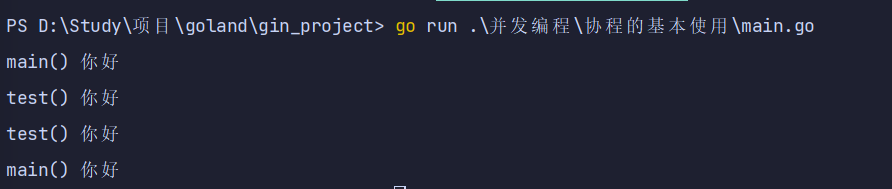
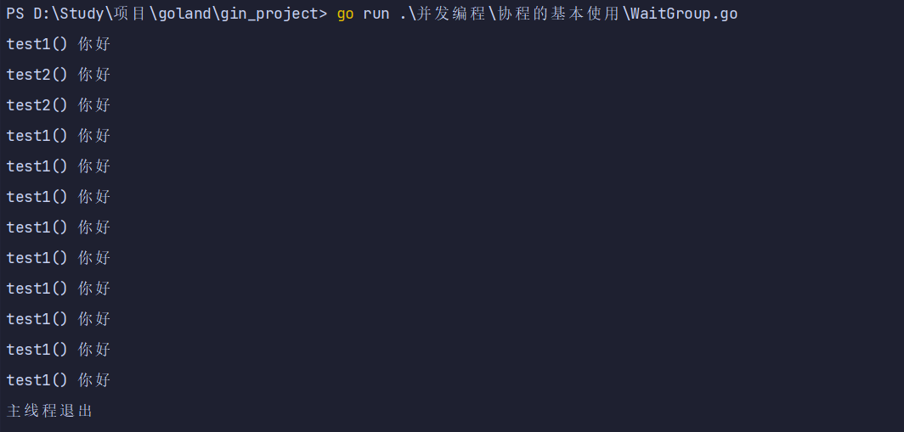
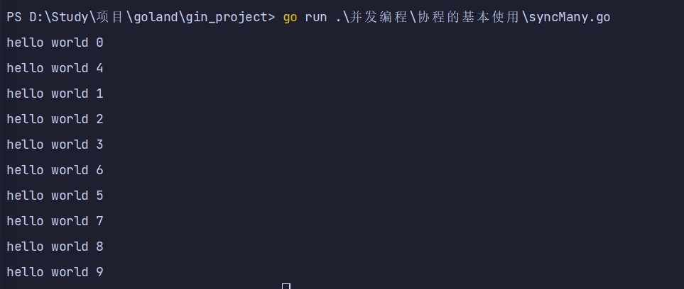
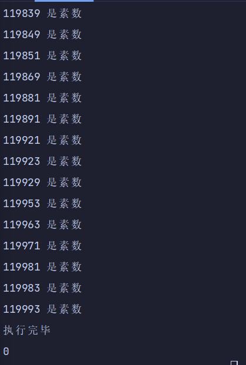

协程基本使用
1. 协程基本使用
1.1. 启动一个协程
- 主线程中每个100毫秒打印一次，总共打印2次
- 另外开启一个协程，打印10次
- 情况一：打印是交替，证明是并行的
- 情况二：开启的协程打印两次，就退出了（因为主线程退出了）
package main
import (
"fmt"
"time"
)
func main() {
go test() //表示开启一个协程
for i := 0; i < 2; i++ {
fmt.Println("main() 你好")
time.Sleep(time.Millisecond * 100)
}
}
func test() {
for i := 0; i < 10; i++ {
fmt.Println("test() 你好")
time.Sleep(time.Millisecond * 100)
}
}

1.2. WaitGroup等待协程执行完毕
主线程退出后所有的协程无论有没有执行完毕都会退出
所以我们在主进程中可以通过WaitGroup等待协程执行完毕
sync.WaitGroup内部维护着一个计数器，计数器的值可以增加和减少。
例如当我们启动了N 个并发任务时，就将计数器值增加N。
每个任务完成时通过调用Done()方法将计数器减1。
通过调用Wait()来等待并发任务执行完，当计数器值为0时，表示所有并发任务已经完成。
var wg sync.WaitGroup // 第一步：定义一个计数器 wg.Add(1) // 第二步：开启一个协程计数器+1 wg.Done() // 第三步：协程执行完毕，计数器-1 wg.Wait() // 第四步：计数器为0时推出
package main
import (
"fmt"
"sync"
"time"
)
var wg sync.WaitGroup // 第一步：定义一个计数器
func test1() {
for i := 0; i < 10; i++ {
fmt.Println("test1() 你好")
time.Sleep(time.Millisecond * 100)
}
wg.Done() //协程计数器-1 第三步：协程执行完毕，计数器-1
}
func test2() {
for i := 0; i < 2; i++ {
fmt.Println("test2() 你好")
time.Sleep(time.Millisecond * 100)
}
wg.Done() //协程计数器-1
}
func main() {
wg.Add(1) //协程计数器+1 第二步：开启一个协程计数器+1
go test1() //表示开启一个协程
wg.Add(1) //协程计数器+1
go test2() //表示开启一个协程
wg.Wait() //等待协程执行完毕... 第四步：计数器为0时推出
fmt.Println("主线程退出")
}

2. 多携程案例
2.1. 开启多个协程
- 在 Go 语言中实现并发就是这样简单，我们还可以启动多个 goroutine。
- 这里使用了 sync.WaitGroup 来实现等待 goroutine 执行完毕
- 多次执行上面的代码，会发现每次打印的数字的顺序都不一致。
- 这是因为 10 个 goroutine是并发执行的，而 goroutine 的调度是随机的。
package main
import (
"fmt"
"sync"
)
var wg1 sync.WaitGroup
func hello(i int) {
defer wg1.Done() // goroutine结束就登记-1
fmt.Println("hello world", i)
}
func main() {
for i := 0; i < 10; i++ {
wg1.Add(1) // 启动一个goroutine就登记+1
go hello(i)
}
wg1.Wait() // 等待所有登记的goroutine都结束
}

2.2. 多协程统计素数
- 需求：要统计1-120000的数字中那些是素数？goroutine for循环实现
- 1 协程 统计 1-30000
- 2 协程 统计 30001-60000
- 3 协程 统计 60001-90000
- 4 协程 统计 90001-120000
start:(n-1)*30000+1 end:n*30000
package main
import (
"fmt"
"sync"
"time"
)
var wg2 sync.WaitGroup
func test3(n int) {
for num := (n-1)*30000 + 1; num < n*30000; num++ {
if num > 1 {
var flag = true
for i := 2; i < num; i++ {
if num%i == 0 {
flag = false
break
}
}
if flag {
fmt.Println(num, "是素数")
}
}
}
wg2.Done()
}
func main() {
start := time.Now().Unix()
for i := 1; i <= 4; i++ {
wg2.Add(1)
go test3(i)
}
wg2.Wait()
fmt.Println("执行完毕")
end := time.Now().Unix()
fmt.Println(end - start)
}
